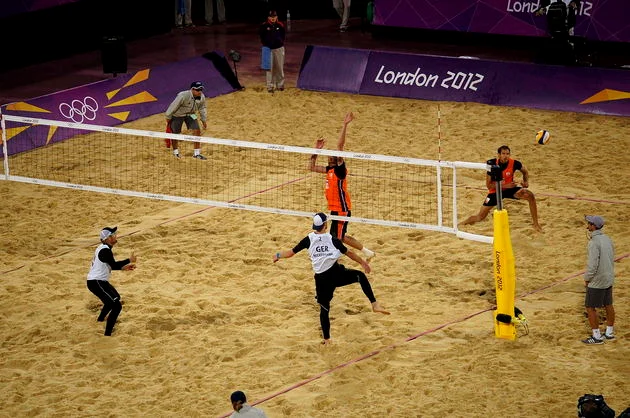

O voleibol ou vôlei é um esporte praticado entre duas equipes numa quadra retangular (aberta ou fechada). Ela é dividida por uma rede colocada verticalmente sobre a linha central. O voleibol é jogado com uma bola e inclui diversos passes com as mãos. O objetivo principal é lançar a bola por cima da rede e fazê-la tocar no chão do adversário.
Cada equipe possui um técnico; Uma partida é constituída de 5 sets; Não existe tempo pré-determinado para cada set; Cada set tem um máximo de 25 pontos com uma diferença mínima de 2 pontos; Em caso de empate no set no final (24 x 24), a partida continua até que a diferença de dois pontos seja atingida (26 x 24, 27 x 25, etc.); Após o saque, a equipe só pode tocar três vezes na bola; Ganha a equipe que vencer três sets; Se houver empate nos sets (2x2) o 5º set será decisivo.
O vôlei de quadra é formado por duas equipes com 6 jogadores em cada. No total, são 12 jogadores. Existem ainda 6 jogadores reserva. Além do vôlei de quadra, há também o vôlei de praia. Diferente da quadra, o de praia é jogado na areia e contém somente quatro jogadores, sendo dois de cada equipe.
Cada jogador tem uma posição dentro da quadra, a qual apresenta uma ordem de rotação: 3 jogadores posicionam-se perto da rede; 3 jogadores posicionam-se na linha de trás.

As regras do voleibol incluem diversas faltas no saque, ataque, passe de bola, toques, posição, rotação de jogadores, dentre outros. Alguns exemplos de falta são: Dois Toques: quando um jogador toca a bola duas vezes consecutivas ou a bola bate em várias partes de seu corpo. Quatro Toques: quando a equipe toca na bola quatro vezes antes de enviá-la aos adversários. Toque apoiado: quando um jogador se apoia em outro da sua equipe. Também é considerado falta se ele se apoia em alguma estrutura ou objeto dentro da área de jogo para golpear a bola. Rotação: se a rotação entre os jogadores não acontecer de maneira correta na hora do saque, a equipe comete falta. Rede: se jogar a bola entre o espaço das duas antenas próximas da rede, o jogador cometerá falta.
Os fundamentos do vôlei são:
Cada jogada do vôlei tem início com os saques. O sacador, como é chamado o jogador que lança a bola, tem que arremessar a bola por cima da rede e dentro da quadra de seu adversário. Se ele ultrapassar o limite, a bola vai retornar para seu adversário sacar. Note que quando a bola toca no chão do time adversário, ocorre a marcação de pontos. A chamada “zona de saque” representa o local onde o jogador (sacador) deve permanecer para lançar a bola. Trata-se de uma área de 9 metros de largura situada após cada linha de fundo.
Se ele ultrapassar o limite, a bola vai retornar para seu adversário sacar. Note que quando a bola toca no chão do time adversário, ocorre a marcação de pontos. A chamada “zona de saque” representa o local onde o jogador (sacador) deve permanecer para lançar a bola. Trata-se de uma área de 9 metros de largura situada após cada linha de fundo.